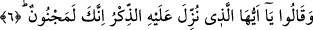

Hz. Peygamber (a.s.), sonra şöyle buyurdu: “Ey Âdemoğulları! Şâyet
akledebiliyorsanız, kendinizi ölülerden sayın. Nefsim kudret elinde olana yemin
ederim ki, size vaad edilen kesinlikle gelecektir ve siz onu önleyemeyeceksiniz.”[48]
Yâni, size vaad edilen ölüm, haşr, hesap ve bunlara benzer kıyâmet hallerini,
kıyâmetin korkunçluklarını getirmekten Allah’ı âciz bırakamayacaksınız!”
6. Dediler ki: “Ey kendisine Kur’an indirilen (Muhammed)! Sen mutlaka bir
mecnunsun!”
Aşırılık ve azgınlıkta çok ileri gittiklerinden Mekke müşrikleri ve Arap kâfirleri,
“Dediler ki: “Ey kendisine Kur’an indirilen (Muhammed)!” Bazı tefsirlerde
belirtildiğine göre bu âyet, Abdullah b. Ümeyye hakkında nâzil olmuştur.
Onlar alay etmek üzere Nebî (a.s.)’a böyle nidâ etmişlerdir. İşte bu sebeple “sen
mutlaka bir mecnûnsun!” diyerek O’na cinnet isnâd ettiler. Çünkü, Kur’an’ın kendisine
indiği inancı ile yine kendisine delilik isnadı bir arada bulunamaz. Onlar şöyle demek
istiyorlardı: Allah’ın sana zikri, yâni Kur’an’ı indirdiğini iddiâ ettiğin zaman sen
delilerin söylediğini söylüyorsun.
Kâşifî şöyle der: Onlar şöyle derler: “Doğrusu sen dîvânesin ki bizi peşin olan dünyâ
nîmetlerinden veresiye olan âhiret nîmetlerine çağırıyorsun.”
Bu âyette dile getirilen iddiânın cevabı, Kalem sûresindeki “Sen, Rabbinin nîmeti
sâyesinde mecnun değilsin.” (el-Kalem, 68/2) âyetidir. Yâni, sen peygamberlik ve
aklın kemâli nîmetleriyle bezenmiş olduğun halde mecnûn değilsin.
Fakir (Bursevî) der ki: Delilik, hem peygamberlerin hem de kâmil velilerin uzak
tutulması gereken eksik vasıflardandır. Onlara delilik isnâdında bulunmak delilik
sayılmıştır. Çünkü böylesine seçilmiş büyük kimselere akılsızlık, iz’ansızlık ve eksiklik
isnâdında bulunmaktan daha büyük densizlik yoktur! Ruh-i Muhammedî demek olan akl-
ı evvelden feyz almayan hiçbir akıl yoktur. Maâdî (uhrevî) akla sâhip olanlar, maâşî
(dünyevî) akla sâhip olanlara göre delidir. Bunun aksi de söz konusudur. Kişi, ancak aşk
dâiresine girdikten sonra makbûl bir delilikle mecnûn olur. Hz. Şeyh-i Ekber (k.s.) der
ki:
Mecnûn’un Leylâ için delirdiği gibi delirdik
Komşularının Sülmâ’ya sevgisi ile delicesine bağlandık.
Yâni biz, ezelden ebede kadar, yegâne gerçek zât olan mâşukun aşkıyla mecnûn olduk,
güzelliğin bizzat kendisi olan sevgilinin sevgisiyle mecnûn olduk. Tıpkı Mecnûn’un o
fânî Leylâ mâşûkasının aşkıyla ve sınırlı bir güzelliğe sâhip sevgilisinin sevgisiyle